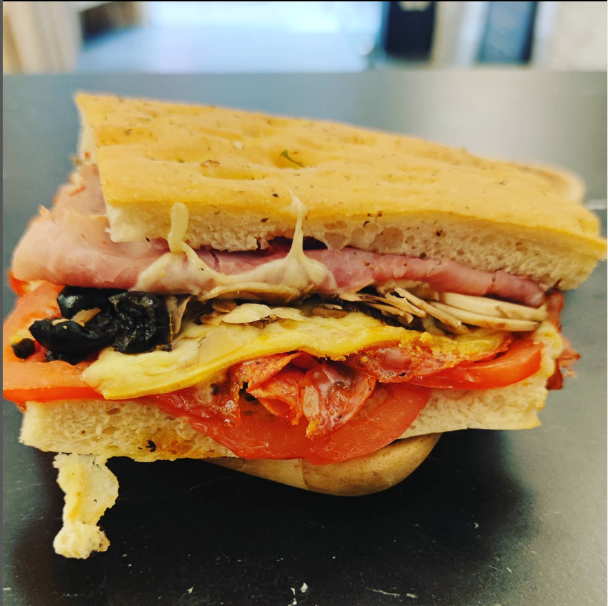

Meet the Davola !

Description:
The Davola sandwich is also made in the Foccacia bread.
I made this choice because it's the spicy one of our card.
Ingredients:
- Foccacia Bread
- Crushed tomatoes
- Black olive
- Sliced ham
- Sliced Ventricina (spicy salami)
- Thin sliced Cantal
- Mushroom
The Steps !
- Cut the Foccacia in half
- Spread out your crushed tomatoes
- Add your black olive, ham, ventricina, and your Cantal on top.
- You can also put it in the Oven at 275° for a minut
- Finish it with a bunch of Mushroom and you're ready to go !